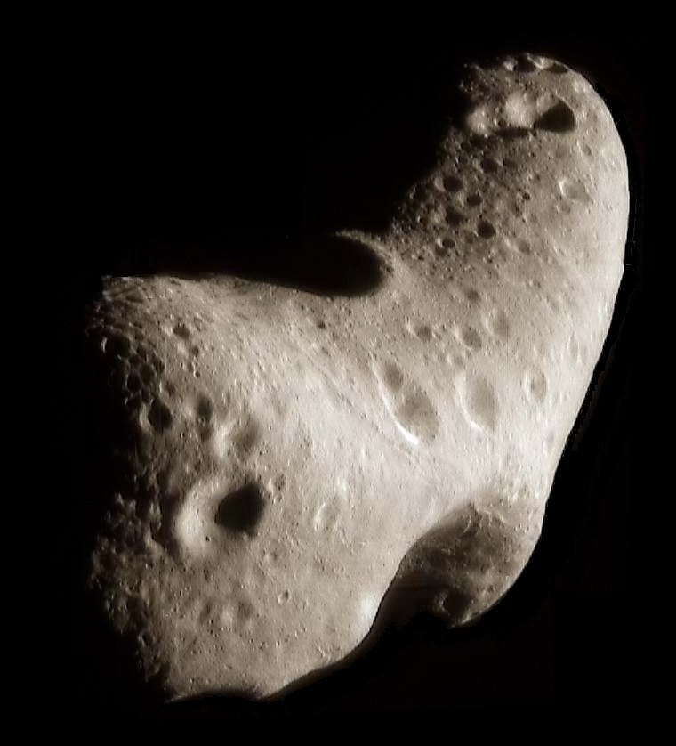

다섯 밤의 기록으로 에로스의 하루와 모양 찾기
1975년 1월, 세 나라 천문학자가 남긴 다섯 밤의 기록을 겹쳐 자전주기를 분 단위까지 구합니다. 그 곡선에 모형을 맞춰 모양을 추론하고, 25년 뒤 탐사선이 찍은 사진과 비교합니다.
오늘의 질문
지난 시간 예측에서 시작에로스의 하루는 정확히 몇 시간 몇 분일까? 밝기 곡선만으로 모양까지 알 수 있을까?
내가 예측한 자전주기
하룻밤 기록은 한 바퀴 남짓만 담고 있어 분 단위로 정하기 어렵습니다. 오늘은 열흘에 걸친 다섯 밤을 함께 씁니다.
1975년 1월 에로스 측광 다섯 밤
| 밤 | 날짜 (세계시) | 관측자 | 점 |
|---|
출처: DAMIT (카렐대학교 천문연구소) · CC BY 4.0. 강도를 상대 등급으로 바꾸었습니다. CSV 내려받기
다섯 밤 자료
시간 순서 그대로 보기밤과 밤 사이에 에로스는 몇 바퀴를 돌았을까? 그 수를 모르는데 다섯 밤을 어떻게 이어 붙일까?
점이 모여 있는 다섯 덩어리
낮에는 관측할 수 없어 밤마다 몇 시간씩만 기록이 있습니다. 1월 19일부터 29일까지 약 250시간, 그동안 에로스는 수십 바퀴를 돌았습니다. 밤마다 쓴 망원경과 측광기가 달라 밝기의 기준점(0점)을 밤마다 맞추었습니다.
접기의 생각
주기 P를 가정하고, 각 관측 시각을 P로 나눈 나머지만 남깁니다. 이것이 위상(한 바퀴 안의 위치, 0~1)입니다. P가 맞으면 다섯 밤의 점이 한 곡선 위에 겹치고, 틀리면 흩어집니다.
예) P = 5시간, 관측 시각 23시간 → 23 ÷ 5 = 4.6바퀴 → 위상 0.6
주기 접기
천문학자가 쓰는 위상 겹치기다섯 밤의 점이 가장 깔끔하게 한 곡선으로 겹치는 주기는?
0.001시간은 3.6초입니다.
| 주기 (h) | 흩어짐 |
|---|
컴퓨터로 2~8시간을 모두 시도해 보기
세 번 이상 기록하면 열립니다.
골짜기를 누르면 그 주기로 접습니다.
AI 답 검토
AI가 낸 주기를 자료와 물리로 따져 보기AI가 내놓은 자전주기는 믿을 만할까? 자료만으로 결정할 수 없다면 무엇이 더 필요할까?
CSV와 요청문을 AI에 넣기
학교에서 허용한 생성형 AI에 다섯 밤 CSV를 올리고 아래 요청문을 붙여 넣으세요.
AI를 쓸 수 없는 교실이라면
주기를 찾는 가장 흔한 컴퓨터 방법은 자료에 사인 곡선 하나를 맞추며 주기를 바꿔 보는 것입니다(Lomb–Scargle 주기 분석). AI가 분석 코드를 써 줄 때 이 방법을 많이 씁니다. 같은 자료에 이 방법을 그대로 쓰면 가장 강한 후보는 2.633시간입니다.
두 주기로 접은 모습
나의 판정
두 값의 흩어짐이 거의 같다면 자료만으로는 정할 수 없습니다. 1차시의 두 가설 모형, 밝기 차가 1등급에 이른다는 점을 함께 생각해 보세요.
모형 맞추기
길쭉한 타원체가 돌 때의 밝기 곡선어떤 모양과 방향의 타원체가 관측 곡선을 가장 잘 따라갈까?
지구에서 본 모형. 점선은 자전축.
| a/b | θ | 차 |
|---|
힌트: 1975년의 θ
나중에 밝혀진 에로스의 자전축 방향으로 계산하면, 1975년 1월 지구는 에로스를 자전축에서 약 85° 기울어진 방향, 거의 적도 쪽에서 보았습니다.
도전: θ를 바꿔도 맞출 수 있을까?
θ를 75°로 바꾼 뒤 a/b를 다시 맞춰 보세요. 차가 비슷하게 작아지면, 한 시기의 자료만으로는 a/b와 θ를 함께 정할 수 없다는 뜻입니다.
탐사선과 비교
1931년의 망원경, 2000년의 탐사선밝기 곡선으로 추론한 에로스와 실제 에로스는 얼마나 닮았을까?

내 모형을 기록한 뒤 열어 보세요.
에로스가 다시 지구에 가까워진 1931년, 천문학자 판 덴 보스와 핀센은 큰 굴절 망원경으로 에로스가 길쭉하게 보이며 그 긴 축의 방향이 약 5시간 17분마다 한 바퀴 돈다고 직접 측정했습니다.
2000년 2월 14일, NEAR 슈메이커는 소행성 궤도에 들어간 첫 탐사선이 되었습니다. 측정된 크기는 34.4 × 11.2 × 11.2 km, 자전주기는 5.270시간입니다. 왼쪽 사진은 NEAR가 2000년에 찍은 사진을 이어 붙인 모자이크입니다. (NASA/JPL/JHUAPL · Public domain)
내 결과와 비교
1951년 10월 11일의 에로스
같은 에로스인데 이 밤에는 밝기가 0.2등급 정도만 변했습니다. Beyer (1953) · DAMIT